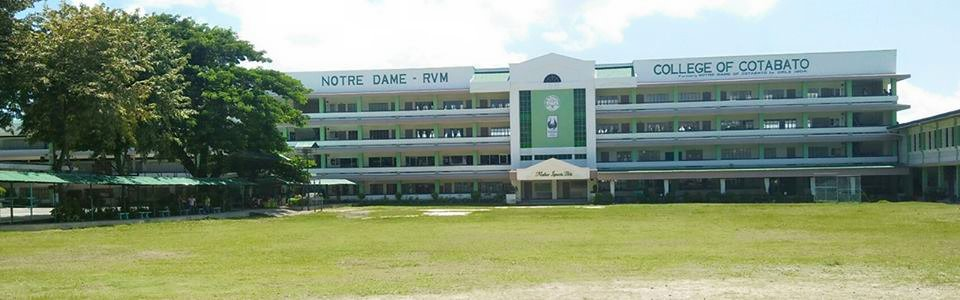

Welcome to Notre Dame-RVM College of Cotabato
Address: Sinsuat Ave, Cotabato City, Maguindanao
ND-RVMCC: A Historical Development
Notre Dame – RVM College of Cotabato has its beginning from the Escuela Catolica founded by the Beatas (now R.V.M. Sisters) S. Isabel Cero Mojado, S. Valentina Lorenzo, S. Filomina Galos and S. Severina Santos who were sent by the Superior General of the Beatas, Reverend Efigenia Alvarez, in 1904. The first classes were held at the home of Don Antonio and Doña Eusebia Sousa, the generous benefactors of the Sisters.